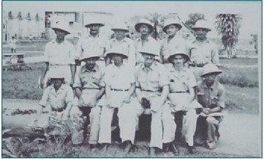
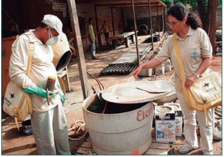

APRESENTAÇÃO
A Rede Nacional de Atenção Integral à Saúde do Trabalhador (Renast), conforme o Anexo X da Portaria de Consolidação n° 3/GM/MS (Origem: PRT MS/GM 1679/2002) (BRASIL, 2017a), é a principal estratégia de efetivação, organização e implementação das ações de Saúde do Trabalhador (ST) em todos os serviços do Sistema Único de Saúde (SUS). No âmbito nacional, a Coordenação Geral de Saúde do Trabalhador (CGSAT), do Departamento de Saúde Ambiental, do Trabalhador e Vigilância das Emergências em Saúde Pública (DSASTE), da Secretaria de Vigilância em Saúde (SVS) do Ministério da Saúde (MS), é a responsável pela gestão e planejamento das ações relativas à Saúde do Trabalhador, além de coordenar a implementação da Política Nacional de Saúde do Trabalhador e da Trabalhadora (PNSTT). A PNSTT, segundo o Anexo XV da Portaria de Consolidação n° 2/GM/MS (Origem: PRT MS/GM 1823/2012) (BRASIL, 2017b), representa uma importante conquista para os trabalhadores brasileiros e um marco no fortalecimento das políticas sociais no Brasil. Ao definir os princípios, as diretrizes e as estratégias a serem observadas pelas três esferas de gestão do SUS para o desenvolvimento da Atenção Integral à Saúde do Trabalhador, a PNSTT reconhece o trabalho como um dos determinantes do processo saúde-doença dos indivíduos e da coletividade, enfatizando a Vigilância em Saúde do Trabalhador (Visat) como estratégia de promoção da saúde e de redução da morbimortalidade na população trabalhadora. Considerando a influência dos modelos de desenvolvimento econômico nos processos produtivos, na modificação da natureza e na dinâmica das populações, observa-se que fatores como a urbanização desordenada, o desmatamento, a deficiência no abastecimento adequado de água e as lacunas no processo de coleta e destinação dos resíduos sólidos, bem como a existência de condições climáticas favoráveis, propiciaram, nos últimos anos, a expansão, emergência e reemergência das arboviroses no Brasil (em especial, dengue, Zika, chikungunya e febre amarela), doenças que representam um grave problema de saúde pública no mundo. A importância dessas doenças reside, principalmente, no seu grande potencial epidêmico e de dispersão, sensibilidade às alterações das dinâmicas populacionais e ações humanas, susceptibilidade universal e, entre outros fatores, na ocorrência de graves prejuízos à saúde, como acometimentos hemorrágicos, articulares e neurológicos, dentre os quais se destacam complicações como as encefalites em adultos, síndrome de Guillain-Barré, óbitos fetais, microcefalia e síndrome congênita associada à infecção pelo vírus Zika (SCZ). No escopo das ações estratégicas definidas pela SVS para a contenção do ciclo de transmissão dessas doenças, destaca-se o papel de milhares de trabalhadores que desenvolvem ações em prol do controle das endemias e epidemias. Esses profissionais possuem atribuições de grande relevância e executam atividades de promoção da saúde, vigilância, prevenção e controle de doenças, de acordo com as estratégias preconizadas pelo Ministério da Saúde. Entretanto, observa-se que a atividade laboral desses trabalhadores pode envolver a manipulação de inseticidas, transporte de equipamentos, pesquisa de vetores em locais de difícil acesso, entre outras atividades, que os expõem a fatores de riscos, tais como os químicos, ergonômicos, sociais, físicos, biológicos e os ligados a acidentes. A despeito de os manuais, protocolos e diretrizes elaborados e publicados pelo Ministério da Saúde orientarem estados e municípios sobre as ações e atividades de vigilância a serem executadas e sobre os procedimentos de segurança a serem seguidos pelos agentes de combate às endemias (ACE), diante do conceito ampliado de Saúde do Trabalhador, que norteia as ações de atenção integral à saúde dessa população no SUS, verifica-se a necessidade de atualizar e estender o escopo desses documentos para além da segurança relativa ao uso de agentes químicos, incorporando medidas de proteção coletivas e intervenções para a melhoria das condições, organização e processos de trabalho. Dessa forma, o DSASTE, por meio da Coordenação Geral de Saúde do Trabalhador (CGSAT), em colaboração com a área técnica da Coordenação Geral de Vigilância das Arboviroses, do Departamento de Imunização e das Doenças Transmissíveis (CGARB/DEIDT/SVS), realizou um trabalho conjunto intra e intersetorial, com a colaboração de especialistas nas temáticas de saúde do trabalhador, saúde ambiental e gestão em saúde para a elaboração deste Manual, que tem como público-alvo os gestores federais, estaduais e municipais de saúde, os profissionais da Rede de Atenção à Saúde (RAS) e da Vigilância em Saúde e a rede intersetorial que apresente interface com o tema. Devido às especificidades do processo de trabalho para o controle do mosquito Aedes aegypti, este primeiro volume do Manual abordará as medidas de proteção à saúde dos agentes de combate às endemias que desenvolvem atividades voltadas ao controle desse vetor. Medidas de proteção relativas às atividades dos ACE para controle de outros agravos e doenças serão abordadas em outros volumes. Este Manual é norteado pela linha do cuidado integral e busca apontar os fatores de riscos presentes nas atividades, organização e processos de trabalho, bem como descrever as medidas de proteção coletiva e individual e as ações de promoção e proteção à saúde a serem observadas pelas três esferas de gestão do SUS. Uma vez que os processos de trabalho são dinâmicos, tornam-se essenciais discussões e atualizações periódicas sobre os temas aqui abordados. Pretende-se, portanto, favorecer a disseminação e incorporação deste Manual como ferramenta operacional das medidas de proteção à saúde dos ACE que atuam no controle vetorial do mosquito Aedes aegypti, na perspectiva de promover a melhoria da qualidade de trabalho e de vida desse grupo de trabalhadores.
INTRODUÇÃO
As epidemias sempre estiveram presentes na história das coletividades humanas. A par disso, os contextos sociais dos modos de produção, associados aos fatores econômicos, condicionaram modificações no ambiente e nas estruturas urbanas e rurais que favoreceram e ainda favorecem a sua ocorrência (BARATA, 1987). No Brasil, pode-se dizer que a história da saúde pública foi, em grande parte, marcada pela tentativa de eliminar grandes surtos epidêmicos desde períodos coloniais, como o de febre amarela, e outros que surgiram posteriormente ao longo dos anos, como malária, leishmaniose e doença de Chagas (LIMA, 2002). Em períodos recentes, pelo grande impacto na morbidade e na mortalidade, além das implicações sobre os serviços de saúde, destacam-se especificamente as epidemias de arboviroses (doenças causadas por arbovírus, do inglês ARthropod BOrne VIRUS), como dengue, Zika, febre amarela e chikungunya (DONALISIO; FREITAS; VON ZUBEN, 2017). No Brasil, as medidas de controle de vetor tiveram início no período colonial, desde a primeira campanha sanitária contra febre amarela, realizada em Recife no ano de 1691 (BRASIL, 1994b, p. 7), passando pelas epidemias no Rio de Janeiro no século XIX (LIMA, 2002), até as mais recentes. Assim, as ações para prevenção dessas endemias foram se estruturando com base no conhecimento do território de atuação e nos procedimentos relacionados ao trabalho de campo. Desde então, a figura dos ACE ganhou destaque (Figuras 1 e 2) e, posteriormente, estes foram incorporados à organização operacional dos programas de controle de doença e saúde ambiental (BEZERRA, 2017). Os ACE estiveram presentes nos mais diversos contextos de atuação do controle vetorial, tanto em áreas urbanas quanto rurais do país. Sua formação inicial abordava estudos geográficos e elaboração de mapas, além de vigilância sobre os focos dos vetores e sua erradicação, com uso de inseticidas e sensibilização da população por meio da educação sanitária; dessa forma, eles herdaram um vasto conhecimento das técnicas de controle das doenças transmitidas por vetores (BEZERRA, 2017). Esses profissionais acompanharam a história da saúde pública do país. No entanto, suas funções e atribuições sofreram alterações ao longo dos anos, passando de um sistema vertical de ações de controle e vigilância para um modelo descentralizado. Isso exigiu uma formação mais ampla e científica de recursos humanos qualificados, pois os ACE era conhecidos como guardas da malária, guardas da dengue, guardas da esquistossomose, entre outros, por atuarem apenas no âmbito de uma doença; em consequência, detinham um conhecimento restrito a um ou dois agravos (TORRES, 2009). Entretanto, mesmo diante da longa trajetória e da importância dos agentes de combate às endemias, foi apenas em 2006, a partir da publicação da Lei Federal nº 11.350, de 5 de outubro de 2006, que o trabalho do agente foi descrito e regulamentado. Considerando as estratégias de vigilância e ações em saúde pública, o ACE é um profissional fundamental nas ações de controle de endemias e epidemias, trabalhando junto às equipes de Atenção Básica da Estratégia de Saúde da Família (ESF) e auxiliando na integração entre as vigilâncias epidemiológica, sanitária e ambiental (TORRES, 2009).
Turma de Guardas Sanitários, 1944.
Agentes de Combate às endemias, 2019
Algumas atividades preconizadas para o controle vetorial das arboviroses podem expor os ACE a riscos de acidentes e doenças relacionadas ao trabalho. Dessa forma, faz-se necessário que as orientações relacionadas à proteção da saúde do trabalhador, instituídas por meio de portarias, normas regulamentadoras, instruções normativas, notas informativas e manuais sejam observadas durante a realização do trabalho de campo, em consonância com os direitos universais e constitucionais à saúde e ao ambiente de trabalho seguro. Como esses trabalhadores podem ter vínculos de trabalho nas três esferas de gestão do SUS, é de responsabilidade do empregador garantir a sua segurança. O Ministério da Saúde e as Secretarias de Saúde têm responsabilidades que vão desde a identificação dos riscos presentes no ambiente laboral e a realização de exames admissionais e periódicos até a adoção de estratégias de minimização dos riscos durante o processo de trabalho, como a realização de capacitações e adoção de medidas de proteção coletiva e individual. Uma vez que as atividades de controle vetorial dos programas de vigilância do Ministério da Saúde estão em constante revisão de suas metodologias de trabalho, tornam-se essenciais discussões e atualizações sobre os temas aqui abordados, para que as orientações sejam testadas, avaliadas e aprimoradas de forma contínua, a fim de que se adequem à realidade. Durante o século XX, alguns manuais de procedimentos para os programas de controle de endemias foram elaborados e passaram por modificações e atualizações ao longo do tempo. Tais manuais concentravam-se em orientar os trabalhadores nas ações de campo. Entretanto, desde a publicação do Manual de Saneamento, que veio a suceder o Manual dos Guardas Sanitários elaborado em 1944, os conteúdos não abordam aspectos de saúde e segurança do trabalhador na perspectiva da atenção integral à saúde, com orientações quanto às condições e organização do processo de trabalho. Considerando a necessidade de estabelecer medidas e orientar práticas voltadas à saúde e segurança na realização das atividades dos ACE, este Manual pretende sistematizar as ações necessárias para a proteção à saúde dos trabalhadores inseridos nas atividades de controle do Aedes aegypti. A partir da compreensão e diferenciação entre o trabalho prescrito ou tarefa e o trabalho real ou atividade (BRITO, 2008), que por sua vez define o processo, organização e condição do trabalho, este documento busca trazer elementos técnicos para o desenvolvimento locorregional de medidas de saúde e segurança aos trabalhadores, abordando a proteção coletiva e individual, os aspectos de monitoramento clínico e laboratorial e as ações a serem adotadas diante da ocorrência de doenças e agravos relacionados ao trabalho. Dessa forma, espera-se a disseminação e incorporação das orientações deste Manual, na perspectiva de promover a melhoria das condições e processos de trabalho, a fim de contribuir para a construção democrática e participativa da Saúde do Trabalhador no Sistema Único de Saúde, rumo ao fortalecimento da cidadania e diminuição das injustiças e desigualdades.
OBJETIVOS
Objetivo geral
Orientar, de forma prática e operacional, as medidas de promoção e proteção à saúde a serem seguidas e que devem ser asseguradas aos agentes de combate às endemias (ACE), na perspectiva da atenção integral à saúde do trabalhador.
Objetivos específicos
Orientar, de forma prática e operacional, as medidas de promoção e proteção à saúde a serem seguidas e que devem ser asseguradas aos agentes de combate às endemias (ACE), na perspectiva da atenção integral à saúde do trabalhador.
Descrever os fatores e as condições de risco advindos do trabalho realizado pelos ACE.
Definir as medidas de proteção à saúde coletivas e individuais para os ACE.
Orientar a manutenção das condições e processos de trabalho seguros, destacando o papel da informação sobre trabalho, saúde e segurança na formação dos agentes, bem como na incorporação do saber do trabalhador na melhoria dos ambientes e processos de trabalho.
Orientar o acompanhamento e monitoramento de saúde dos ACE.
Orientar a elaboração de fluxos de atendimento e encaminhamento dos trabalhadores frente às situações de acidentes, doenças e agravos relacionados ao trabalho, bem como ações de vigilância em saúde do trabalhador e aspectos legais de notificações e registro de doenças e acidentes.
ESTRUTURA DO MANUAL
Este Manual foi estruturado em cinco eixos temáticos, organizados a partir de um olhar sistematizado sobre a saúde dos trabalhadores, priorizando, a partir da análise do processo de trabalho, a identificação dos perigos e riscos a que estes estão sujeitos, bem como a descrição das correspondentes medidas de controle e proteção, conforme indicado a seguir:
O Eixo 1 está centrado na figura do agente de combate às endemias. Descreve as atribuições legais dos trabalhadores dessa categoria profissional e apresenta um breve resumo do histórico do trabalho dos agentes.
O Eixo 2 aborda os processos de trabalho e os fatores de risco identificados durante a realização das atividades dos agentes de combate às endemias, bem como as consequências para sua saúde, como doenças e agravos relacionados ao trabalho, que podem se desenvolver a partir das situações de trabalho e exposições.
O Eixo 3 apresenta orientações práticas e operacionais de proteção à saúde, a partir da análise das atribuições dos agentes de combate às endemias, do processo de trabalho e dos fatores e situações de riscos aos quais estão expostos. Busca, a partir da lógica da hierarquia de controles, sistematizar as medidas de proteção coletiva e individual a serem seguidas, visando a promoção da saúde dos trabalhadores. Ressaltam-se, como aspectos prioritários, a manutenção das condições de ambientes e processos de trabalho mais seguros e os cuidados a serem observados na operacionalização e manejo dos produtos e substâncias utilizadas.
O Eixo 4 estabelece, com base em normas e procedimentos técnicos, as ações de monitoramento da situação de saúde dos agentes de combate às endemias, como exames admissionais e periódicos e monitoramento clínico.
O Eixo 5apresenta ações a serem realizadas pela rede de atenção à saúde frente à ocorrência de doenças e agravos relacionados ao trabalho, incluindo as atribuições das unidades de urgência e emergência, do Centro de Referência em Saúde do Trabalhador (Cerest), da Atenção Básica e da Vigilância em Saúde, além de informações toxicológicas e os fluxos e notificações a serem estruturados na rede.
1.1 O agente de combate às endemias: breve história da evolução da categoria profissional
O surgimento dos agentes de combate às endemias foi fundamentado no histórico das ações de enfrentamento da malária, febre amarela e outras endemias rurais, como a doença de Chagas e a esquistossomose. O recorte mais significativo desse histórico teve início quando Oswaldo Cruz, após assumir o cargo de Diretor-Geral de Saúde Pública em 1903, adotou um modelo de controle baseado na forma de organização militar (BRASIL, 2004).
A polícia sanitária brasileira, que atuava no controle do vetor da febre amarela no Rio de Janeiro, era constituída por um grupo de agentes sanitários chamado de brigada de “mata-mosquitos”, formado por jovens recrutados para exterminar os possíveis focos de reprodução do Aedes aegypti nos imóveis. O trabalho consistia na visita domiciliar para a limpeza de calhas, depósitos e caixas d’água, muitas vezes, sem consentimento dos próprios moradores (BEZERRA, 2017). Assim, os serviços e as competências desses agentes foram se fortalecendo e se institucionalizando.
Em 1970, foi criada a Superintendência de Campanhas de Saúde Pública (Sucam), que incorporou os recursos humanos e as técnicas de controle das endemias em sua estrutura organizacional e operativa, e herdou uma forma de trabalho que se baseava em normas técnicas específicas das campanhas, a exemplo da malária e febre amarela.
Conforme os Decretos Federais nº 57.474/65 e nº 56.759/65, que estabeleceram normas para o controle da malária e da febre amarela, respectivamente, observa-se uma série de procedimentos que estão diretamente relacionados com o trabalho de campo e a identificação do território de atuação, a exemplo do reconhecimento geográfico, que se baseia no cadastro das casas, na contagem do número de imóveis e habitantes e na construção de croquis das localidades, vias de acesso e acidentes geográficos. Além disso, destacam-se atividades de vigilância sobre os focos e sua erradicação, com a sensibilização da população por meio da educação sanitária e o uso de inseticidas (BEZERRA, 2017).
Na década de 1990, foi criada a Fundação Nacional de Saúde (FNS), que mais tarde, em 1999, passou a ser representada pela sigla Funasa e incorporou as funções da Sucam e da Fundação Serviços de Saúde Pública (FSESP). Conforme Varga (2007), a instituição herdou da FSESP o que se chamou de “sanitarismo integralista” (serviços de saúde, saneamento e abastecimento de água), e da Sucam, as experiências do campanhismo popularizado de base territorial, com foco no trabalho de campo com as comunidades. Absorveu, também, as atividades da extinta Secretaria Nacional de Ações Básicas de Saúde (SNABS) e da Secretaria Nacional de Programas Especiais de Saúde (SNPES), bem como as ações de informática do SUS, até então desenvolvidas pela Empresa de Processamento de Dados da Previdência Social (Dataprev).
A Funasa foi criada em meio a um cenário de transformações sociais, econômicas e políticas em âmbito nacional, assumindo todas as ações de controle das endemias e de saneamento público domiciliar do país. Durante os primeiros anos, desenvolveu suas atividades de forma centralizada e pouco sistêmica. Esse período caracterizou-se pelo desenvolvimento de ações pontuais, setoriais e desarticuladas. Essa realidade, aliada às diferenças culturais das organizações que a originaram, dificultava sua integração ao Sistema Único de Saúde (BRAGA; VALLE, 2007).
Com a implantação do SUS e o processo de descentralização, ações que eram de responsabilidade da União foram consignadas aos estados, municípios e Distrito Federal. Nesse contexto, muitos ACE que atuaram diretamente no controle de vetores, realizando visitas domiciliares, inspeções e eliminação de depósitos aptos à proliferação do mosquito transmissor da dengue (ações voltadas especificamente ao controle do Aedes aegypti) e que estavam regidos por contratos temporários, foram demitidos em meio ao processo de descentralização e reordenamento organizacional institucional (BEZERRA, 2017).
Em 2003, com a aprovação da Medida Provisória nº 86, os 5.792 ACE demitidos foram reintegrados. Em 2006, a Medida Provisória nº 297 estabeleceu que esses trabalhadores reintegrados fossem regidos pela Consolidação das Leis Trabalhistas (CLT), conforme a Lei Federal nº 9.962, de 22 de fevereiro de 2000, como empregados públicos (GUIDA et al., 2012). No mesmo ano, com a publicação da Lei Federal nº 11.350, de 5 de outubro de 2006, o trabalho dos agentes passou a ocorrer exclusivamente no âmbito do SUS, mediante contratação por meio de seleção pública, não sendo permitida a contratação temporária ou terceirizada, salvo em situações de epidemias (BRASIL, 2006).
Em 2018, foi publicada a Lei Federal nº 13.595, de 5 de janeiro de 2018, que alterou a Lei Federal nº 11.350, de 5 de outubro de 2006, e que dispõe sobre a reformulação das atribuições, a jornada e as condições de trabalho, o grau de formação profissional, os cursos de formação técnica e continuada e a indenização de transporte dos profissionais agentes comunitários de saúde (ACS) e ACE (BRASIL, 2018a).
No que se refere às atividades desses profissionais, a legislação mais recente outorgou novos direitos às duas categorias, como a contagem entre regimes de previdência para fins de concessão de benefícios, o adicional de insalubridade, a definição de horário de trabalho considerando as condições climáticas locais, o fornecimento ou garantia de custeio do transporte para que exerçam suas atividades e, no caso específico dos ACE, a obrigatoriedade de sua presença na estrutura da vigilância epidemiológica e ambiental.
De acordo com a CBO, os agentes de combate às endemias, código 5151-40, são também denominados agentes de controle de vetores, agentes de controle de dengue e guardas de endemias.
Importante destacar que, a depender do código de saúde do estado ou município, o ACE pode adquirir outras denominações como agente de vigilância ambiental, agente de saúde ambiental, agente de controle de endemias, entre outros, sem que isso interfira nas suas atribuições e direitos garantidos legalmente. Neste Manual, optou-se por utilizar o termo agente de combate às endemias por ser esta a denominação constante nas normas vigentes, adotada, também, pela Classificação Brasileira de Ocupações (CBO).
1.2 Atribuições dos agentes de combate às endemias e ações complementares dos agentes comunitários de saúde
Conforme preconizado pela Política Nacional de Vigilância em Saúde1 e pela Política Nacional de Atenção Básica, a integração entre as ações de Vigilância em Saúde e de Atenção Básica é fator essencial para o atendimento das reais necessidades de saúde da população. Nesse sentido, o trabalho conjunto e complementar entre os Agentes de Combate às Endemias (ACE) e os Agentes Comunitários de Saúde (ACS), em uma base territorial comum, é estratégico e desejável para identificar e intervir oportunamente nos problemas de saúde-doença da comunidade, facilitar o acesso da população às ações e serviços de saúde e prevenir doenças
Integrar implica discutir ações a partir da realidade local, aprender a olhar o território e identificar prioridades, assumindo o compromisso efetivo com a saúde da população, desde o planejamento e definição de prioridades, competências e atribuições até o cuidado efetivo das pessoas, sob a ótica da qualidade de vida (BRASIL, 2008).
De acordo com o art. 3º da Lei Federal nº 13.595, de 5 de janeiro de 2018 (BRASIL, 2018a), as atribuições dos ACE consistem em:
Desenvolver ações educativas e de mobilização da comunidade relativas à prevenção e ao controle de doenças e agravos à saúde;
Realizar ações de prevenção e controle de doenças e agravos à saúde, em interação com os ACS e as equipes de Atenção Básica;
Identificar casos suspeitos de doenças e agravos à saúde e encaminhá-los, quando indicado, à unidade de saúde de referência, assim como comunicar o fato à autoridade sanitária responsável;
Divulgar, entre a comunidade, informações sobre sinais, sintomas, riscos e agentes transmissores de doenças e sobre medidas de prevenção coletivas e individuais;
Realizar ações de campo para pesquisa entomológica e malacológica e coleta de reservatórios de doenças;
Cadastrar e atualizar a base de imóveis para planejamento e definição de estratégias de prevenção e controle de doenças;
Executar ações de prevenção e controle de doenças, com a utilização de medidas de controle químico e biológico, manejo ambiental e outras ações de controle integrado de vetores;
Executar ações de campo em projetos que visem a avaliar novas metodologias de intervenção para a prevenção e controle de doenças;
Registrar informações referentes às atividades executadas, de acordo com as normas do SUS;
Identificar e cadastrar situações que interfiram no curso das doenças ou que tenham importância epidemiológica, relacionada principalmente aos fatores ambientais;
Mobilizar a comunidade para desenvolver medidas simples de manejo ambiental e outras formas de intervenção no ambiente para o controle de vetores.
A Lei Federal nº 13.595, de 5 de janeiro de 2018 (BRASIL, 2018a), também define algumas ações a serem desenvolvidas de forma integrada com os ACS (art. 4º-A), em especial no âmbito das atividades de mobilização social por meio da educação popular, dentro das respectivas áreas geográficas de atuação, a saber:
Orientação da comunidade quanto à adoção de medidas simples de manejo ambiental para o controle de vetores, de medidas de proteção individual e coletiva e de outras ações de promoção à saúde para a prevenção de doenças infecciosas, zoonoses, doenças de transmissão vetorial e agravos causados por animais peçonhentos;
Planejamento, programação e desenvolvimento de atividades de vigilância em saúde, de forma articulada com as Equipes de Saúde da Família;
Identificação e comunicação, à unidade de saúde de referência, de situações que, relacionadas a fatores ambientais, interfiram no curso de doenças ou tenham importância epidemiológica;
Realização de campanhas ou de mutirões para o combate à transmissão de doenças infecciosas e outros agravos.
Ainda de acordo com a Lei Federal nº 13.595/2018 (BRASIL, 2018a), os ACE devem desenvolver outras atividades, expressas na lei, assistidas por profissionais de nível superior e condicionadas à estrutura da Vigilância em Saúde e da Atenção Básica.
Dessa forma, cabe ressaltar que as atividades dos ACE são diversas e não se restringem apenas às ações de controle das arboviroses abordadas neste Manual. Outros documentos importantes, tais como a Política Nacional de Vigilância em Saúde, a Política Nacional de Atenção Básica e a Política Nacional de Promoção da Saúde3, também trazem diretrizes gerais para a atividade dos agentes que atuam no controle de doenças, incluindo os ACE, na lógica da territorialização e da integralidade do cuidado à saúde da população.
Importante salientar que, nas situações em que os ACS desenvolverem ações de controle vetorial, as medidas recomendadas neste Manual também devem ser direcionadas a esse grupo de trabalhadores.
2.1 Processo de trabalho dos agentes de combate às endemias
Todo processo de definição e instituição de medidas de saúde e segurança com foco na atenção integral na saúde do trabalhador, bem como as correspondentes ações de vigilância em saúde, se inicia com a análise do trabalho, dos trabalhadores e de seus componentes, a fim de estabelecer as possíveis repercussões dessa atividade na saúde. Dessa forma, é importante conhecer tanto as condições de trabalho, que envolvem a) o ambiente físico – iluminação, ruído, poeira, substâncias químicas etc., b) o ambiente biológico – bactérias, vírus, fungos etc., c) o posto de trabalho – espaços físicos, condições das máquinas, equipamentos e ferramentas utilizadas etc., quanto a organização do trabalho, que abrange, principalmente, a divisão das tarefas (o trabalho prescrito, ordenado pelos organizadores) e a divisão dos trabalhadores (FERREIRA, 2015). É a partir da compreensão do trabalho real (BRITO, 2008) – aquele que de fato é realizado pelos trabalhadores a partir dos meios estes que possuem para executá-lo – que são implementadas as intervenções necessárias à garantia da saúde e segurança do trabalhador. Assim sendo, o conhecimento sobre as atividades e como estas são desenvolvidas é essencial para identificar os fatores e situações de risco aos quais os trabalhadores estão expostos e adotar medidas para sua eliminação ou mitigação.
Tradicionalmente, são conhecidas várias formas de controle vetorial que podem ser utilizadas de forma isolada ou integrada. Assim, têm-se os controles mecânico, biológico, legal, químico e integrado, sendo este último atualmente preconizado pelo Ministério da Saúde. Transversais a quaisquer formas de controle estão as ações educativas junto à população, bem como as ações de caráter intersetorial, com envolvimento das áreas de saneamento e meio ambiente, educação, ordenamento urbano, cidadania, entre outras. Para uma melhor compreensão do processo de trabalho do ACE no controle do Aedes aegypti, as atividades correspondentes serão resumidas a seguir em dois grandes grupos: visitas domiciliares e aplicação de adulticidas.
Para compreender melhor: Tarefa: é aquilo que é solicitado ao trabalhador para ser executado. Também chamado de trabalho prescrito. Atividade: compreende o trabalho real, o que é de fato realizado pelo trabalhador a partir dos meios que este possui para dar conta do que lhe é pedido, ou seja, para realizar uma tarefa.
2.1.1 VISITAS DOMICILIARES
A visita domiciliar é uma das principais ações desenvolvidas pelos ACE. Tem um marcado caráter educativo e pressupõe a participação da população na adoção de cuidados para a eliminação dos criadouros, bem como para a identificação de casos suspeitos das arboviroses transmitidas pelo Aedes aegypti, além do aconselhamento ao morador com suspeita de doença para busca oportuna de atendimento junto à Rede de Atenção à Saúde. A presença regular dos ACE nas residências em áreas prioritárias é uma importante medida para a promoção de informações que possam favorecer a mudança de comportamento. As visitas domiciliares são precedidas de ações de planejamento, preparação e organização das atividades, e têm por base o território de atuação. Tais ações envolvem os diferentes atores que atuam nos programas de controle, como os gestores da área de manejo vetorial, os supervisores de campo e os ACE. Nessas ações, são estabelecidos os locais de atuação de cada equipe, bem como o número de imóveis a serem inspecionados.
É importante considerar que o número de visitas domiciliares e as metas de rendimento médio devem ser programados de acordo com a realidade do município, levando em conta o tamanho dos imóveis, as condições climáticas, o absenteísmo, a carga horária diária, entre outros. Esses parâmetros podem ser utilizados para a adoção de estratégias diferenciadas, como o Levantamento Rápido de Índices (LIRAa), que permite ações direcionadas para áreas com maior risco.
O número de visitas domiciliares e as metas de rendimento médio devem ser observados de acordo com a realidade do município.
De forma geral, os materiais de trabalho utilizados pelos ACE são armazenados nos locais onde os integrantes das equipes se encontram antes de iniciar as atividades diárias, a fim de se munir dos equipamentos, registrar frequência e trocar informações sobre situações encontradas no território. Esses locais, denominados pontos de apoio (PA), encontram-se dentro da área de abrangência dos ACE e podem funcionar em diversos estabelecimentos, como unidades de saúde, centros comunitários, escolas, entre outros. Os materiais incluem as bolsas para armazenar os instrumentos de trabalho, como lápis, pranchetas, formulários, pesca-larvas e tubos para depósito das formas imaturas do vetor, bem como inseticidas, equipamentos de proteção individual (EPI) e outros, a depender da organização local e das atividades.
A partir dos PA, os ACE se dirigem à área de trabalho e iniciam o processo de vistoria aos imóveis – domicílio e peridomicílio – para a identificação de potenciais criadouros do mosquito transmissor da dengue e a adoção de medidas de controle, com a participação dos moradores/proprietários. A visitação é também realizada em imóveis comerciais e terrenos baldios. Caso sejam identificados criadouros, os ACE orientam ao morador a realização do controle mecânico ou procedem eles mesmos à remoção, destruição ou vedação, e em último caso, ao tratamento químico ou biológico, com a utilização de larvicidas nos depósitos que não são passíveis de eliminação mecânica ou cobertura. Durante as atividades de levantamento de infestação, os ACE realizam a coleta de larvas para envio ao laboratório de entomologia.
Em alguns imóveis, são detectados pontos de difícil acesso, com grande potencial de proliferação, como caixas d’água descobertas, calhas e lajes com problemas de limpeza e escoamento, cisternas e outros locais de armazenamento de água. Para a inspeção desses pontos, é necessário um esforço adicional, com utilização de escadas, cordas e outros mecanismos. Essa atividade é classificada como trabalho em altura.
Considera-se trabalho em altura toda atividade executada acima de 2,00m (dois metros) do nível inferior, em que haja risco de queda. Para inspecionar depósitos de difícil acesso encontrados em locais abrangidos pela definição de trabalho em altura, é importante que sejam estruturadas equipes especializadas, conforme a NR-35 (BRASIL, 2016). Importante destacar que, normalmente, os ACE locomovem-se a pé ou de bicicleta e percorrem extensas áreas, estando em grande parte do tempo expostos à radiação solar e outras intempéries. Ao final do dia, os ACE retornam ao PA para devolver os materiais de trabalho, os quais não devem ser levados às suas residências.
Para inspecionar depósitos de difícil acesso encontrados em locais abrangidos pela definição de trabalho em altura, é importante que sejam estruturadas equipes especializadas e observadas as disposições legais da NR-35 (BRASIL, 2016), que estabelece os requisitos mínimos e as medidas de proteção para o trabalho em altura, envolvendo o respectivo planejamento, organização e execução, de forma a garantir a segurança e a saúde dos trabalhadores envolvidos direta ou indiretamente com essa atividade. A equipe especializada deverá passar por avaliação médica que a habilite trabalhar em altura, além de contar com treinamento e equipamentos de segurança para executar esse tipo de tarefa.
No decorrer da execução de seu trabalho de rotina, os ACE podem passar por supervisão direta ou indireta, realizada pelos supervisores de campo, que acompanham a execução das ações a fim de verificar a qualidade do trabalho e orientar medidas de melhoria das atividades.
Ao final do manual, você pode baixar a versão em PDF clicando no link abaixo:
Download do Manual em PDF